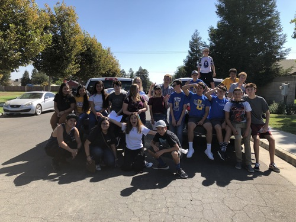
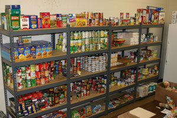
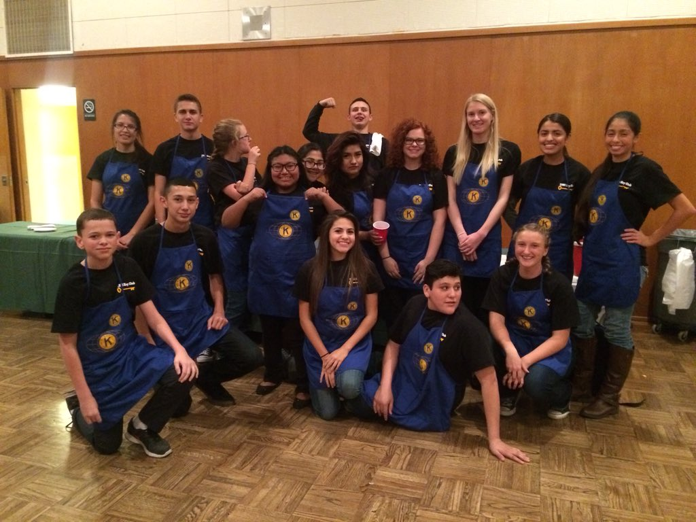
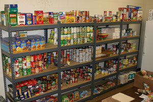

Faustino Ramos
I am originally from Exeter, California, which is located in the Central Valley. My parents immigrated to this country so they can have a better future for themselves and for their kids.
Growing up I would see them come home tired and dirty from work.
They worked in the fields picking fruit, which is not a good working environment. In working the fields, one has to deal with outdoor bathrooms, low wages, working long hours, and dealing with hot and cold temperatures.
Seeing them struggle motivated me to work harder during school and not want to suffer the same fate as them.
During high school I wanted to make sure I was the best student I could be.
I took advanced courses which are courses in order to prepare oneself for Advanced Placement (AP) courses. I also participated in Kiwanis International, also known as Key Club.
I was an active member and assisted with a number of their events.
My favorite event to be part of was collecting clothes for families that were not as fortunate to afford clothes.
Key Club members, like myself, would go on a Saturday to knock on resident’s doors to see if they had any donations, and all those donations went to a local church
where people who cannot buy clothes were able to get the clothes for free.
This really made me happy because I was literally giving back to the community.
I say “literally giving back to the community” because there would be times where our family was not financially stable, so we would go to that church to get our clothes.
Now years later seeing me give back to people who are in the position that we used to be makes me proud that a little help can make a huge difference in someone’s life.
Another event I enjoyed doing with Key Club was serving at their pancake breakfasts.
I would greet hundreds of guests and serve them their drinks and food, a lot of them which were old teachers from my elementary and middle school years.
So I was able to socialize as well as help with my community.
It was also a pleasure being able to work alongside fellow Key Club members, forming friendships along the way.
Apart from doing Key Club, I was also a member of the Science Olympiad. Science Olympiad is where students are able to compete in various events that deal with different disciplines of science.
I was a member for three years and all three years the team I was on made it to the State Competition. Events that I participated in were Material Science, Chemistry Lab, and Forensics.
Out of those three events, I have to say Forensics was my favorite because we had to conduct various experiments
in order to find out who committed a crime.
Currently, I am a second year Pre-Business student at the University of California, Riverside.
I chose Pre-Business in order to concentrate in Accounting.
I enjoy math, which is the reason why I either want to specialize in Accounting and I am also open to specialize in Finance. My plans after graduation is to go straight into the field work and get my CPA license.
In my free time I like to go on jogs because it helps me clear my mind and learn some Japanese through Duolingo since I am a fan of some Japanese Animations.
Experience
Field Worker
- • Efficiently picked fruits (plums, tangerines, and peaches)
- • Organized and stacked boxes so the fruit would not fall and be damaged
- • Worked in hot and cold temperatures during my winter and summer breaks
Member
-
•Volunteered at five pancake breakfast
- ⁃Served 100+ guests
- ⁃Collaborated with fellow team memebers in order to provide guests a positive experience
-
•Participated in six clothe drives
- ⁃Politely asked house residents if they had any clothes that they could donate
- ⁃Handed out flyers with a group of 4-5 members in order to inform house owners of the clothe drive
Food Link
- •Organized food into boxes
- •Treated guests with respect
- •Translated for Spanish Speakers
Education
University of California, Riverside CA
- •Second year student, with junior status
- •Cumulative GPA: 4.0
Exeter Union High School, Exeter, CA
- •Valedictorian
- •Cumulative GPA: 4.3
- •Passed five AP College Exams (US History, English, Calculus, US Government, Spanish)
College of the Sequoias, Visalia, CA
- •Two semesters of Psychology and English at a local community college while in high school
Honors and Awards
Exeter Union High School
- •Valedictorian 2019
- •Senior Scholastic Achievement in Mathematics May 2019
- •Senior Scholastic Achievement in Foreign Language May 2019
- •Outstanding Student in AP Physics May 2018
- •Outstanding Student in Integrated Math 2&3 May 2017
- •Outstanding Student in Chemistry May 2017
- •Outstanding Student in Spanish May 2016
- •Outstanding Student in Computer Applications November 2016
Exeter Union High School, Exeter, CA
- •Valedictorian
- •Cumulative GPA: 4.3
- •Passed five AP College Exams (US History, English, Calculus, US Government, Spanish)
College of the Sequoias, Visalia, CA
- •Two semesters of Psychology and English at a local community college while in high school
Portfolio

Key Club of 2018 after collecting clothes

Had to organized canned food as showned in the image above

Picked tangerines off of trees

Pancake Breakfast sponsored by Kiwanis International
Key Club of 2018 after collecting clothes

Had to organized canned food as showned in the image above